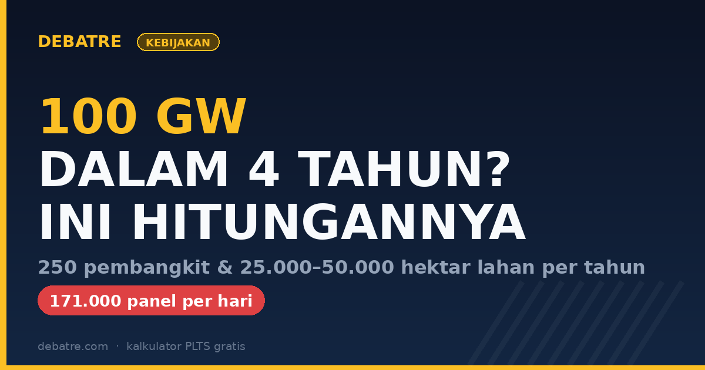
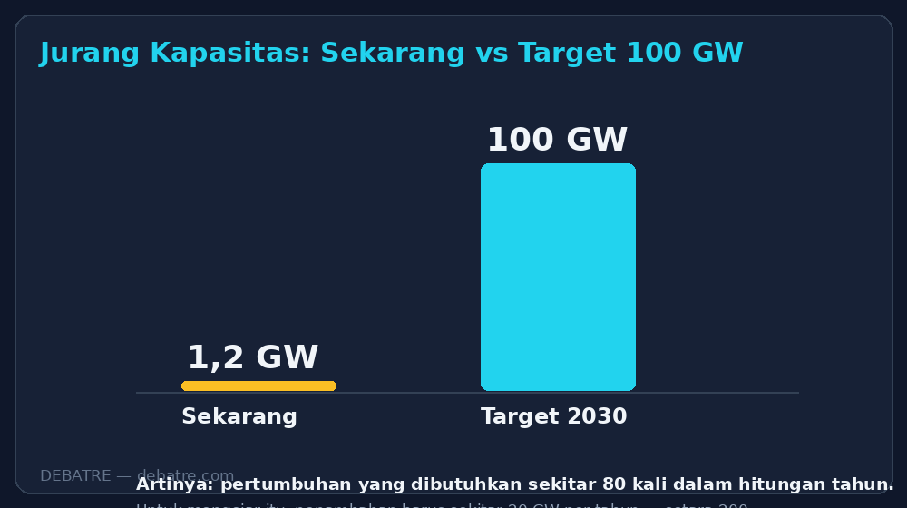

Target 100 GW PLTS: Uji Hitungan, Hambatan, dan Jalan Keluarnya
Diperbarui 17 November 2026 | Waktu baca: 10 menit

Angka 100 gigawatt (GW) untuk PLTS Indonesia sudah sering disebut di ruang rapat maupun di berita. Masalahnya, angka sebesar itu jarang dibawa ke satuan yang bisa dibayangkan: berapa pembangkit, berapa hektar lahan, berapa panel yang harus dipasang setiap hari. Tanpa itu, “100 GW” hanya jadi slogan — tidak bisa dinilai realistis atau tidak.
Artikel ini menguji target tersebut dengan aritmetika sederhana, memakai asumsi yang ditulis terbuka. Bukan untuk menolak targetnya, tapi untuk melihat di mana titik berat bebannya.
Ukuran jurangnya

Kapasitas PLTS atap Indonesia berada di kisaran 1,2–1,5 GW pada 2026. Untuk mencapai 100 GW pada 2030, artinya perlu penambahan sekitar 25 GW per tahun selama empat tahun — atau sekitar 80 kali kapasitas yang ada sekarang.
Kalau targetnya dibaca sebagai “dua tahun” (versi tantangan yang sempat disampaikan secara terbuka), maka yang dibutuhkan menjadi 50 GW per tahun. Ini bukan soal optimisme, tapi soal kapasitas industri dan perizinan yang harus tersedia lebih dulu.
Menerjemahkan 25 GW per tahun
Supaya konkret, berikut turunannya dengan asumsi yang dinyatakan terbuka:
| Besaran | Asumsi | Hasil |
|---|---|---|
| Jumlah pembangkit | PLTS utility-scale 100 MW | 250 unit/tahun |
| Kebutuhan lahan | 1–2 hektar per MW | 25.000–50.000 ha/tahun |
| Jumlah panel | modul 400 Wp | 62,5 juta panel/tahun |
| Panel per hari | 365 hari kerja | ±171.000 panel/hari |
Angka 25.000–50.000 hektar per tahun itu setara dengan tiga sampai enam kali luas Jakarta. Bukan mustahil — Indonesia punya lahan bekas tambang, waduk, dan atap bangunan — tetapi jelas tidak bisa diselesaikan dengan pendekatan “cari lahan sambil jalan”.
Angka 171.000 panel per hari juga menjelaskan mengapa kapasitas pabrik menjadi penentu. Itu bukan jumlah yang bisa ditutup oleh satu-dua pabrik perakitan; perlu pasokan sel yang stabil dan rantai logistik yang rapi setiap hari, tanpa putus.
Lima hambatan yang menentukan
1. Jaringan, bukan cuma pembangkit. PLTS menghasilkan listrik saat matahari bersinar, sementara beban puncak biasanya sore-malam. Tanpa jaringan yang mampu menyerap fluktuasi, pembangkit besar justru bisa dipaksa berhenti (curtailment). Ini hambatan teknis yang paling sering diabaikan dalam diskusi target.
2. Pembiayaan. 25 GW per tahun adalah kebutuhan investasi yang sangat besar. Sumber dananya harus campuran: APBN terbatas, jadi swasta, lembaga multilateral, dan skema hijau menjadi kunci. Suku bunga tinggi membuat proyek PLTS — yang biaya awalnya besar dan biaya operasionalnya kecil — menjadi lebih berat.
3. Lahan dan perizinan. Selain luas, masalahnya adalah status lahan, tumpang tindih dengan izin lain, dan waktu proses. Proyek yang lolos secara teknis bisa tertahan bertahun-tahun karena lahan.
4. Rantai pasok. Sel, inverter, dan kabel adalah komponen yang tidak bisa diproduksi sendiri dalam waktu dekat. Ketergantungan impor berarti target juga dipengaruhi kurs, logistik, dan kebijakan dagang negara lain.
5. Sumber daya manusia. Instalasi 25 GW per tahun butuh ribuan teknisi terlatih: pemasangan, commissioning, dan perawatan. Kekurangan tenaga terlatih adalah hambatan yang tidak terlihat di dokumen perencanaan, tapi terasa di lapangan.
Jalan keluarnya
Tidak ada satu solusi tunggal. Yang realistis adalah menekan beban dari beberapa sisi sekaligus:
- • Sebar ke atap, bukan hanya lahan. PLTS atap tidak butuh lahan baru dan tidak perlu transmisi panjang. Ini jalur tercepat yang bisa berjalan bersamaan dengan proyek besar.
- • Manfaatkan waduk dan lahan bekas tambang. PLTS terapung dan PLTS di lahan pascatambang mengurangi persoalan lahan sekaligus memanfaatkan infrastruktur dan izin yang sudah ada.
- • Perkuat jaringan lebih dulu di titik terpadat. Fokus penambahan pada wilayah yang jaringan dan bebannya sudah siap, sambil menyiapkan yang belum.
- • Pakai skema pembiayaan yang tidak membebani APBN. Kredit hijau, obligasi, dan kemitraan swasta dengan pembagian risiko yang jelas.
- • Latih tenaga kerja secara massal. Sertifikasi teknisi instalasi dan perawatan harus berjalan secepat penambahan kapasitas.
Yang bisa dilakukan perorangan
Target nasional terasa jauh, tapi kontribusinya bisa dihitung. Satu rumah dengan PLTS atap 1,5 kWp menambah kapasitas nyata, mengurangi beban jaringan pada siang hari, dan menurunkan tagihan. Jika 1 juta rumah memasang 1,5 kWp, hasilnya 1,5 GW — sepuluh kali lipat kapasitas PLTS atap nasional saat ini.
Sebelum memasang, hitung dulu kebutuhan rumah dengan kalkulator DEBATRE: masukkan daya alat, jam pemakaian, tegangan sistem, dan kondisi cuaca di lokasi. Hasilnya memberi gambaran kapasitas panel dan baterai yang sesuai — supaya tidak membeli terlalu kecil, dan tidak membayar untuk kapasitas yang tidak terpakai.
Kesimpulan: target 100 GW bukan soal kemauan, tapi soal kapasitas: 25 GW per tahun berarti 250 pembangkit 100 MW, 25.000–50.000 hektar lahan, dan 171.000 panel per hari. Hambatan terbesarnya bukan panel, melainkan jaringan, pembiayaan, lahan, rantai pasok, dan tenaga kerja terlatih. Jalur yang paling bisa dipercepat justru PLTS atap dan PLTS terapung — karena keduanya tidak berebut lahan baru.
Sumber & rujukan
- • Kementerian Energi dan Sumber Daya Mineral — dokumen perencanaan kelistrikan (RUPTL) dan statistik kapasitas EBT — esdm.go.id
- • PLN — Rencana Usaha Penyediaan Tenaga Listrik dan data bauran energi — pln.co.id
- • International Energy Agency — laporan tahunan pasar energi terbarukan — iea.org
- • IRENA — statistik kapasitas energi terbarukan & biaya pembangkitan — irena.org
Asumsi teknis pada tabel (100 MW per pembangkit, 1–2 ha/MW, modul 400 Wp) adalah asumsi ilustratif yang lazim dipakai dalam perencanaan kasar. Angka sesungguhnya berbeda menurut teknologi, lokasi, dan desain pembangkit.